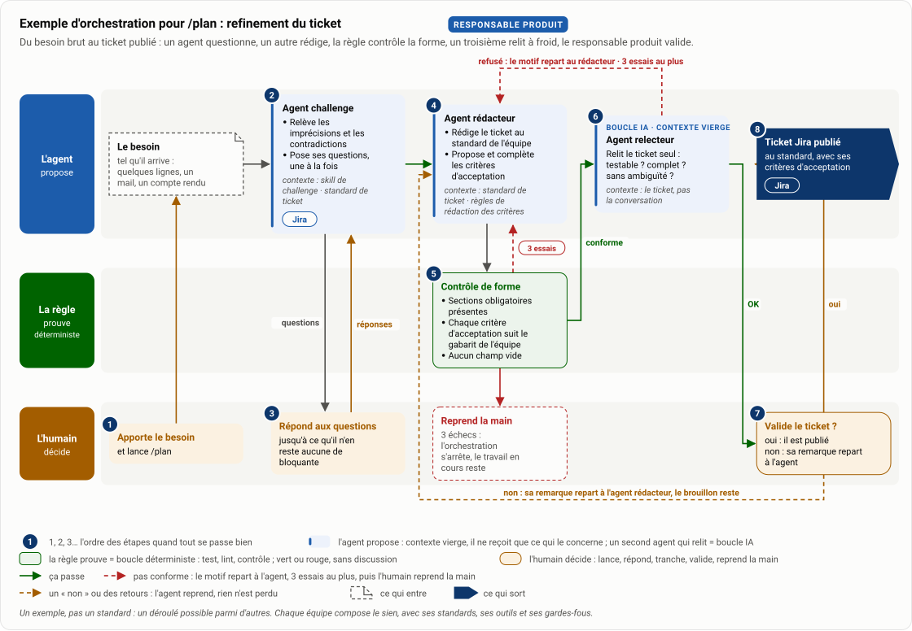
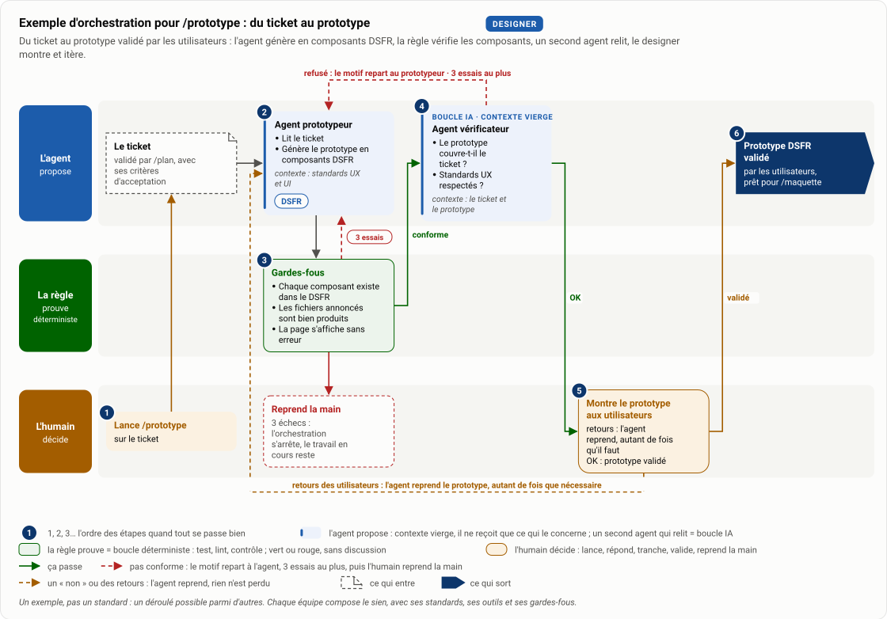
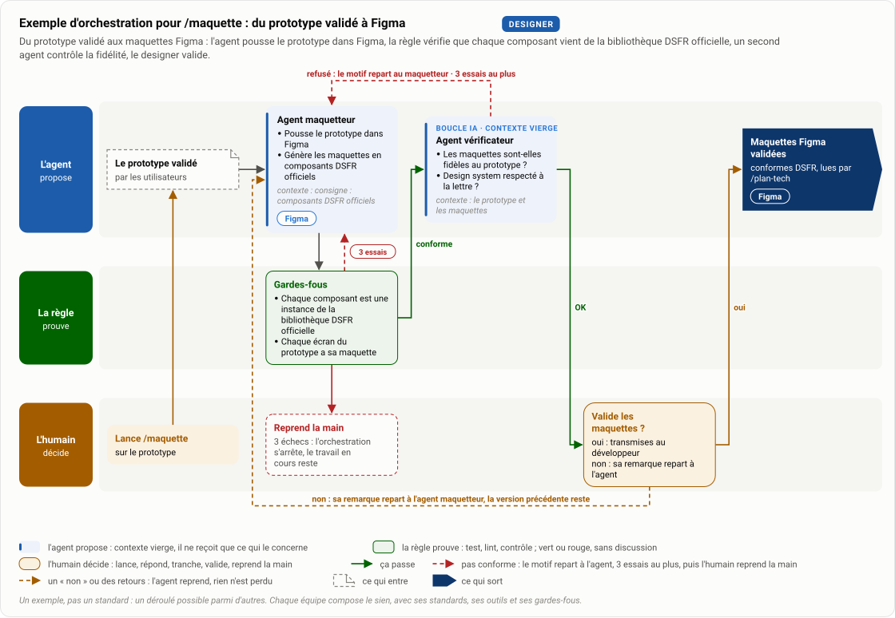
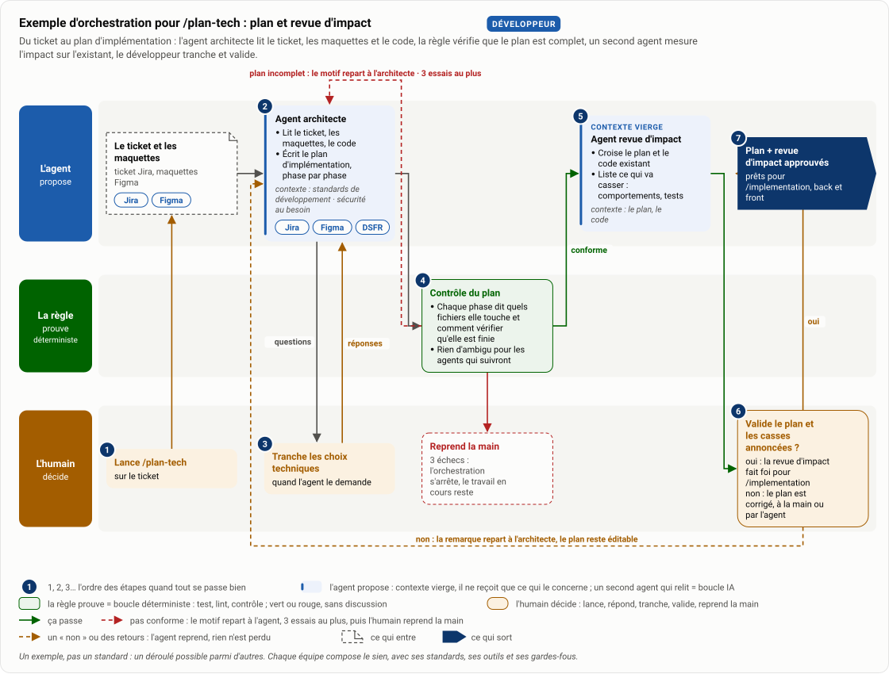
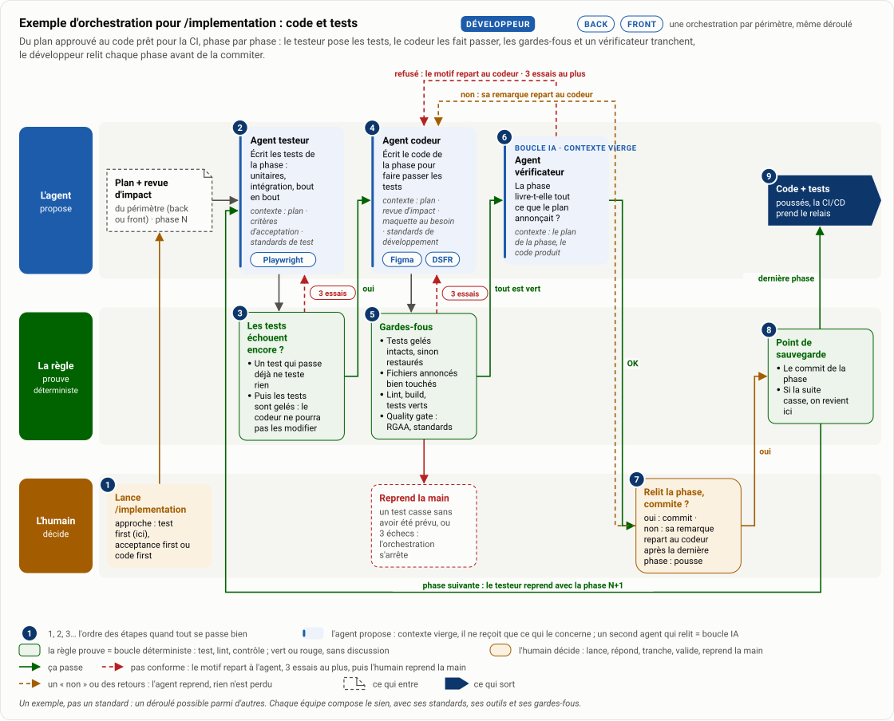

| Responsable produit | Designer | Développeur | |||
|---|---|---|---|---|---|
| /planrefinement du ticket | /prototypedu ticket au prototype | /maquettedu prototype validé à Figma | /plan-techplan et revue d'impact | /implementationcode et tests | |
| L'agentpropose |
|
|
|
|
|
| L'humaindécide |
|
|
|
|
|
| Contexteles standards |
|
|
|
|
|
| MCPoutils branchés | Jira | DSFR | Figma | JiraFigmaDSFR | JiraFigmaDSFRPlaywright |
| Sortiel'artefact | Ticket Jira précis, au standard, avec ses critères d'acceptation | Prototype DSFR, montré aux utilisateurs | Maquettes Figma du prototype validé, conformes DSFR | Revue d'impact prévu sur le code + plan d'implémentation | Code et tests, prêts pour la CI |
| Soutiens à la productionvérifient le code | Pendant /implementation ↓ commit, puis pushIDE : ESLint Quality gate avant commit : RGAA, standards de qualité, build sans erreur À chaque push, en boucle ↓ la nuitCI/CD : revue de code par un bot IA, puis Sonar Rejet du bot ou issue Sonar : la correction repart dans /implementation Chaque nuit, hors boucle Pré-audit RGAA poussé, analyse de sécurité Chaque écart ouvre un ticket, corrigé dans un prochain /plan | ||||
- Skill : commande (/plan, /prototype…) lancée dans le harness de l'équipe, OpenCode Desktop + Albert ou Claude Code + Bedrock · MCP : connecteur standard entre l'agent et un outil (Jira, Figma, DSFR, Playwright)
- Le ticket Jira est le fil conducteur : produit par /plan, lu par /prototype, /plan-tech et /implementation
- La CI/CD tourne en deux temps : à chaque push, la revue du bot IA et Sonar bouclent avec /implementation ; chaque nuit, RGAA et sécurité tournent hors boucle et ouvrent des tickets
- Cible : des soutiens à la production aussi pour le produit (Definition of Ready outillée) et le design (audit DSFR / RGAA), paliers 2 et 3 de la checklist de déploiement
La checklist de déploiement décline cette cible en quatre paliers.
Skill par skill : un exemple d'orchestration
Cinq exemples, un par skill, pour se représenter une orchestration : les agents, le contexte qu'on leur donne, où l'humain intervient, les boucles et les retours. Des illustrations, pas des modèles à copier : chaque équipe compose la sienne. Lecture de gauche à droite, dans l'ordre des numéros : l'agent propose, la règle prouve, l'humain décide. La règle, c'est le rail déterministe : un test, un lint, un contrôle.

Description textuelle du schéma
Ce qui entre : Le besoin, tel qu'il arrive : quelques lignes, un mail, un compte rendu.
- l'humain · Apporte le besoin : et lance /plan
- l'agent · Agent challenge : Relève les imprécisions et les contradictions ; Pose ses questions, une à la fois. Contexte : skill de challenge, standard de ticket. MCP : Jira
- l'humain · Répond aux questions : jusqu'à ce qu'il n'en reste aucune de bloquante
- l'agent · Agent rédacteur : Rédige le ticket au standard de l'équipe ; Propose et complète les critères d'acceptation. Contexte : standard de ticket, règles de rédaction des critères
- la règle · Contrôle de forme : Sections obligatoires présentes ; Chaque critère d'acceptation suit le gabarit de l'équipe ; Aucun champ vide
- l'agent · Agent relecteur : Relit le ticket seul : testable ? complet ? sans ambiguïté ?. Contexte : le ticket, pas la conversation
- l'humain · Valide le ticket : oui : il est publié ; non : sa remarque repart à l'agent
- sortie · Ticket Jira publié : au standard, avec ses critères d'acceptation. MCP : Jira
Boucles : refusé : le motif repart au rédacteur · 3 essais au plus ; non : sa remarque repart à l'agent rédacteur, le brouillon reste. Chaque règle renvoie son motif à l'agent, 3 essais au plus, puis l'humain reprend la main.

Description textuelle du schéma
Ce qui entre : Le ticket, validé par /plan, avec ses critères d'acceptation.
- l'humain · Lance /prototype : sur le ticket
- l'agent · Agent prototypeur : Lit le ticket ; Génère le prototype en composants DSFR. Contexte : standards UX et UI. MCP : DSFR
- la règle · Gardes-fous : Chaque composant existe dans le DSFR ; Les fichiers annoncés sont bien produits ; La page s'affiche sans erreur
- l'agent · Agent vérificateur : Le prototype couvre-t-il le ticket ? ; Standards UX respectés ?. Contexte : le ticket et le prototype
- l'humain · Montre le prototype aux utilisateurs : retours : l'agent reprend, autant de fois qu'il faut ; OK : prototype validé
- sortie · Prototype DSFR validé : par les utilisateurs, prêt pour /maquette
Boucles : refusé : le motif repart au prototypeur · 3 essais au plus ; retours des utilisateurs : l'agent reprend le prototype, autant de fois que nécessaire. Chaque règle renvoie son motif à l'agent, 3 essais au plus, puis l'humain reprend la main.

Description textuelle du schéma
Ce qui entre : Le prototype validé, par les utilisateurs.
- l'humain · Lance /maquette : sur le prototype
- l'agent · Agent maquetteur : Pousse le prototype dans Figma ; Génère les maquettes en composants DSFR officiels. Contexte : consigne : composants DSFR officiels. MCP : Figma
- la règle · Gardes-fous : Chaque composant vient de la bibliothèque DSFR officielle, rien de redessiné ; Chaque écran du prototype a sa maquette
- l'agent · Agent vérificateur : Les maquettes sont-elles fidèles au prototype ? ; Design system respecté à la lettre ?. Contexte : le prototype et les maquettes
- l'humain · Valide les maquettes : oui : transmises au développeur ; non : sa remarque repart à l'agent
- sortie · Maquettes Figma validées : conformes DSFR, lues par /plan-tech. MCP : Figma
Boucles : refusé : le motif repart au maquetteur · 3 essais au plus ; non : sa remarque repart à l'agent maquetteur, la version précédente reste. Chaque règle renvoie son motif à l'agent, 3 essais au plus, puis l'humain reprend la main.

Description textuelle du schéma
Ce qui entre : Le ticket et les maquettes, ticket Jira, maquettes Figma.
- l'humain · Lance /plan-tech : sur le ticket
- l'agent · Agent architecte : Lit le ticket, les maquettes, le code ; Écrit le plan d'implémentation, phase par phase. Contexte : standards de développement, sécurité au besoin. MCP : Jira, Figma, DSFR
- l'humain · Tranche les choix techniques : quand l'agent le demande
- la règle · Contrôle du plan : Chaque phase dit quels fichiers elle touche et comment vérifier qu'elle est finie ; Rien d'ambigu pour les agents qui suivront
- l'agent · Agent revue d'impact : Croise le plan et le code existant ; Liste ce qui va casser : comportements, tests. Contexte : le plan, le code
- l'humain · Valide le plan et les casses annoncées : oui : la revue d'impact fait foi pour /implementation ; non : le plan est corrigé, à la main ou par l'agent
- sortie · Plan + revue d'impact approuvés : prêts pour /implementation, back et front
Boucles : plan incomplet : le motif repart à l'architecte · 3 essais au plus ; non : la remarque repart à l'architecte, le plan reste éditable. Chaque règle renvoie son motif à l'agent, 3 essais au plus, puis l'humain reprend la main.

Description textuelle du schéma
Ce qui entre : Plan + revue d'impact, du périmètre (back ou front) · phase N.
- l'humain · Lance la phase : /implementation, approche : test first (ici), acceptance first ou code first
- l'agent · Agent testeur : Écrit les tests de la phase : unitaires, intégration, bout en bout. Contexte : plan, critères d'acceptation, standards de test. MCP : Playwright
- la règle · Les tests échouent encore : Un test qui passe déjà ne teste rien ; Puis les tests sont gelés : le codeur ne pourra pas les modifier
- l'agent · Agent codeur : Écrit le code de la phase pour faire passer les tests. Contexte : plan, revue d'impact, maquette au besoin, standards de développement. MCP : Figma, DSFR
- la règle · Gardes-fous : Tests gelés intacts, sinon restaurés ; Fichiers annoncés bien touchés ; Lint, build, tests verts ; Quality gate : RGAA, standards
- l'agent · Agent vérificateur : La phase livre-t-elle tout ce que le plan annonçait ?. Contexte : le plan de la phase, le code produit
- l'humain · Relit la phase, commite : oui : commit · non : sa remarque repart au codeur ; après la dernière phase : pousse
- la règle · Point de sauvegarde : Le commit de la phase ; Si la suite casse, on revient ici
- sortie · Code + tests poussés : la CI/CD prend le relais
- l'agent · Bot de revue IA : Relit la diff : standards, lisibilité, régressions ; Approuve ou demande des changements. Contexte : standards de développement, le plan de la phase
- la règle · La PR peut-elle passer : Revue du bot IA approuvée ; Sonar vert : couverture, duplication, vulnérabilités ; Lint, build et tests rejoués
- l'humain · Valide et merge : arbitre les remarques du bot, puis merge
- sortie · Code mergé : la fonctionnalité part en recette
- la règle · Chaque nuit, hors boucle : Pré-audit RGAA poussé ; Analyse de sécurité : dépendances, code ; Trop long pour tourner à chaque push
- l'humain · Les écarts ouvrent des tickets : corrigés dans un prochain ticket, pas dans la phase en cours
Boucles : refusé : le motif repart au codeur · 3 essais au plus ; non : sa remarque repart au codeur ; phase suivante : le testeur reprend avec la phase N+1 ; revue rejetée ou issue Sonar : la correction rejoint le plan de la phase, le codeur reprend. Chaque règle renvoie son motif à l'agent, 3 essais au plus, puis l'humain reprend la main.
- Trois essais au plus par agent : au-delà, l'orchestration s'arrête proprement et l'humain reprend la main. Jamais de boucle sans fin, un coût borné.
- Un « non » à une validation ne détruit rien : le brouillon, le plan ou la version précédente restent, la remarque repart à l'agent.
- Chaque étape validée est un point de sauvegarde : si la suite casse, on y revient au lieu de tout refaire.
- Chaque agent démarre avec un contexte vierge et ne reçoit que ce qui le concerne : le relecteur lit le ticket, pas la conversation qui l'a produit.
- La règle avant l'agent : quand un test, un lint ou un contrôle peut trancher (boucle déterministe), c'est lui qui tranche ; un second agent relit ce qu'aucune règle ne sait prouver (boucle IA).
Des exemples, pas un standard. /implementation s'inspire de ce qui tourne chez Egapro et DACCORD (codeur et testeur séparés, front et back) et y ajoute des mécanismes proposés, à confirmer avec les équipes : tests gelés, agent vérificateur, point de sauvegarde par phase, bot de revue IA en CI (palier 4). Les quatre autres montrent ce qu'une orchestration pourrait être sur ces skills. Chaque équipe compose la sienne au palier 3 de la checklist. Schémas en image, clair et sombre : dossier des schémas.